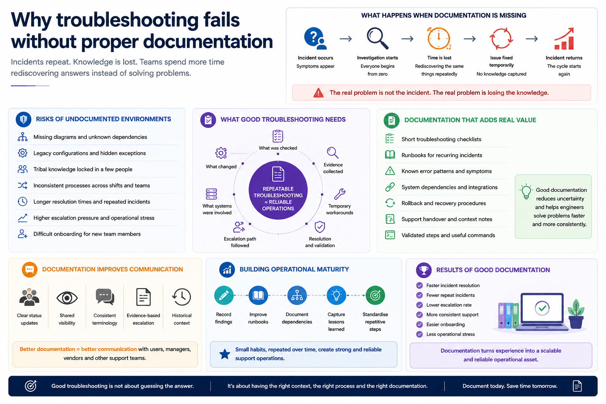

The same incident keeps returning
One of the most common patterns in operational IT environments is the recurring incident that never truly disappears.
The issue gets fixed temporarily, service returns to normal and the ticket closes. Then weeks later, the same symptoms appear again.
Often the problem is not lack of technical skill. The real problem is lack of operational knowledge capture.
Important: troubleshooting becomes unreliable when the investigation path only exists inside someone's memory.
Why undocumented environments create operational risk
In many companies, support teams inherit systems with:
- missing network diagrams
- unknown dependencies
- legacy DNS or firewall rules
- untracked exceptions
- shared administrative accounts
- partial onboarding processes
- tribal knowledge passed verbally between technicians
Those environments may appear stable until an incident happens. Then every investigation starts from zero.
Good troubleshooting depends on repeatability
Strong operational support is not only about solving incidents quickly.
It is also about making investigations repeatable:
- what was checked
- what changed
- what evidence was collected
- what temporary workarounds were used
- what systems were involved
- what escalation path was followed
Without that information, teams spend time rediscovering the same answers.
Documentation reduces escalation pressure
In many support environments, senior engineers become bottlenecks because critical operational knowledge is concentrated in a small number of people.
Well-structured documentation reduces unnecessary escalations and allows support teams to work more consistently across shifts, locations and experience levels.
Useful documentation is practical, not theoretical
The most valuable documentation is rarely long technical manuals.
Operational teams usually benefit more from:
- short troubleshooting checklists
- runbooks for recurring incidents
- known error patterns
- system dependency notes
- rollback procedures
- support handover notes
- validated recovery steps
Good operational documentation should help engineers reduce uncertainty quickly.
Documentation also improves communication
During incidents, technical work is only part of the problem.
Teams also need:
- clear status updates
- shared visibility
- consistent terminology
- evidence-based escalation
- historical context
Documentation helps technical teams communicate with users, managers, vendors and other support groups more effectively.
Operational maturity is built gradually
Mature support environments are not created by a single tool or platform.
They improve through small operational habits:
- recording findings
- improving runbooks
- documenting dependencies
- capturing lessons learned
- standardising repetitive troubleshooting steps
Over time, those habits reduce incident duration, improve consistency and lower operational stress.
Need help improving operational troubleshooting workflows?
I help teams and businesses improve operational troubleshooting, documentation, Microsoft 365 support workflows and repeatable support processes.
Contact: rafael@rafaelalba.com